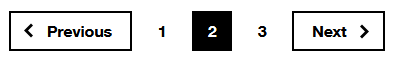
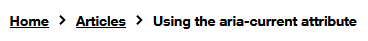
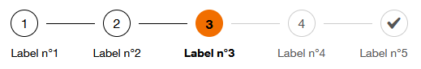
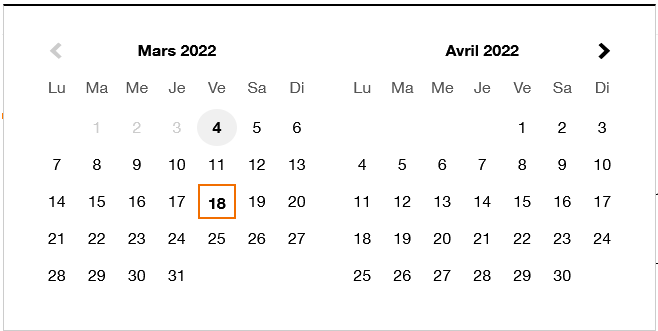

Using the aria-current attribute
Associated themes:- Web
- Intermediate
Publication date
Introduction #
The aria-current attribute indicates the element that represents the current item within a container or set of related elements.
To put it simply, let's take the example of a navigation menu. The current element is usually highlighted by a visual effect. So that this highlighting is also perceived by users who use a screen reader (or any assistive technoligies), it is essential to mark the element at code level using the aria attribute aria-current.
How to use it ? #
To indicate the current element in an element set, simply add an aria-current attribute in the HTML code. For the example below, we use the generic value true:
<ul>
<li>element 1</li>
<li aria-current="true">element 2</li>
<li>element 3</li>
<ul>
The second element of this list will for example be vocalized "current, element 2" by the NVDA screen reader.
Uses #
The aria-current attribute accepts the following values: true, page, step, location, date, time and false.
true: indicates the current item within a setpage: indicates the current page within a setstep: indicates the current step within a processlocation: indicates the current location within an environment or context.date: indicates the current date within a collection of dates.time: indicates the current time within a set of timesfalse(default) : does not represent the current item within a set
Some examples of common uses #
Examples 1: navigation menu #
Use the value page to indicate the current page in a set of pages.
<nav aria-label="Main navigation">
<ul>
<li>
<a href="/en/">Home</a>
</li>
<li>
<a href="/en/help/">Help</a>
</li>
<li>
<a href="/en/about/" aria-current="page">About</a>
</li>
</ul>
Examples 2: paging system #
Use the page value to indicate the page being viewed in a paging system:

<ol>
<li aria-label="page 1">1</li>
<li aria-label="page 2" aria-current="page">2</li>
<li aria-label="page 3">3</li>
</ol>
Examples 3: breadcrumb #
Use the page value to indicate the current page in a breadcrumb:

<ol>
<li><a href="...">Home</a></li>
<li><a href="...">Articles</a></li>
<li aria-current="page">Using the aria-current attribute</li>
</ol>
Examples 4: step process #
Use the step value to indicate the current step in a multi-page step process.

<ol>
<li>Label n°1</li>
<li>Label n°2</li>
<li aria-current="step">Label n°3</li>
<li>Label n°4</li>
<li>Label n°5</li>
</ol>
Example 5: datepicker #
Use the date value in a datepicker component. An aria-current="date" attribute is positioned on the current date while an aria-selected="true" attribute is positioned on the currently selected date.
